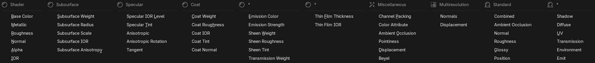
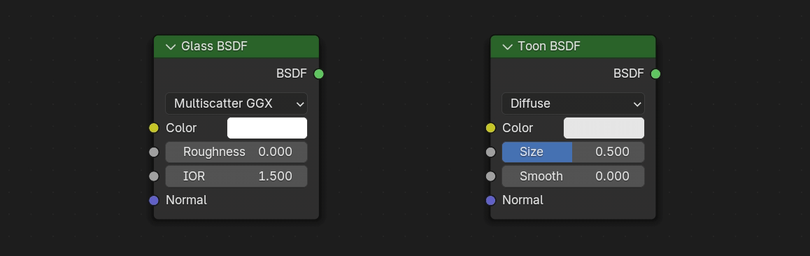

You set up a bake list for the textures, then by just simply selecting the objects in the viewport you want to bake, the bake is ready to be started. After the bakes are finished, a baked version of the objects are created with the baked textures automatically applied. The baked textures and objects can then be exported with a single button with your custom export settings.
Auto Bake is designed for both beginners and advanced users in mind. The panels and their content are thoughtly organized, the buttons and options are enchanced with tooltips to help understand them. The documentation explains the buttons and options in great details and with examples.
A wide variety of textures can be baked with Auto Bake, including shader sockets, multiresolution modifier data, Blender's default bake passes, and a set of miscellaneous bake types for channel packing, pointiness, bevel and more!

Auto Bake is designed both for the very basic single material per objects and for the advanced setups with multiple materials per object. The materials can also vary from a single shader node to the complex node setups with shader mixing and node groups.
Although the texture maps are designed around the Principled BSDF node, it also supports all the other shaders, some fully and some partially extent, depending on the shader's input sockets. If a socket has a matching pair with one of the Principled BSDF's socket, then it can be baked.

Enabling a simple option will create a final material for the baked textures, and automatically set it up, connecting the textures to their corresponding shader socket, and positioning the nodes.
With another option enabled, Auto Bake will not only set up the textures and materials, but it will also create a baked version of the object(s), applying the final material, and replace the final object with the orignal object.
Auto Bake gives the option to export either or both the baked textures and the objects with a single button, with your own custom export settings. You can choose different file format both for the textures and objects.
Options are also provided for folder control. Master folder can be enabled to place both the object and its textures in, and a subfolders option can also be enabled to organize the textures by type.
You have the option to choose the workspace you want to use Auto Bake from. You can use it either from the Render properties where you would normally bake, or from the 3D viewport's sidebar, or even from the Shader Editor's sidebar. The decision is yours, select the one you prefer!
Text
Text
Text
Text
Keep using Blender! When baking textures are being baked in the background, so Blender won't freeze. The progress of the bakes can be seen in the Queue panel.
Text
Text